Conheça meu trabalho em vídeo
Escolha o idioma do vídeo e veja uma apresentação rápida sobre minha trajetória, minhas experiências e o que venho construindo.


Sobre mim
Sou Diogo Antonny, desenvolvedor full-stack com mais de três anos no mercado de tecnologia e experiência criando soluções para o mercado financeiro.
Gosto de estudar com constância, transformar problemas em automações úteis e criar experiências que unem tecnologia, lógica e criatividade. Também estudo idiomas, crio jogos e tenho a música como uma das minhas fontes de inspiração.
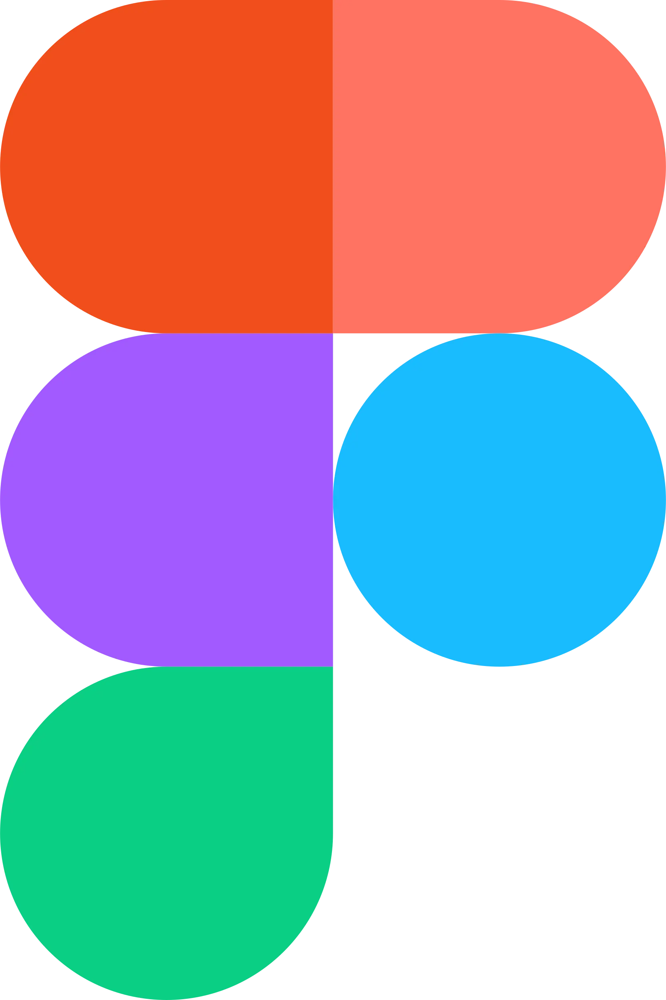
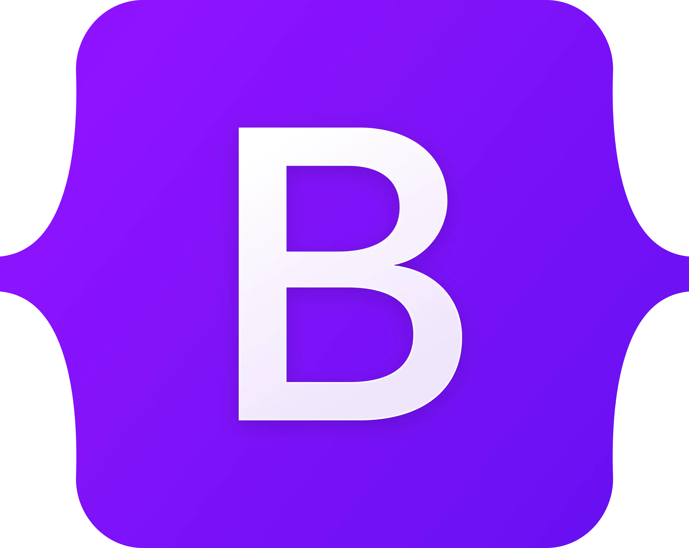
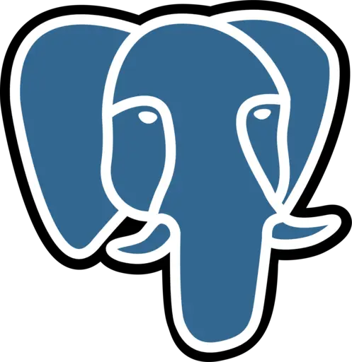
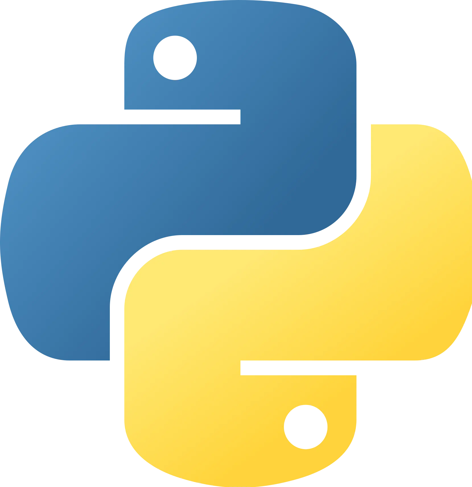
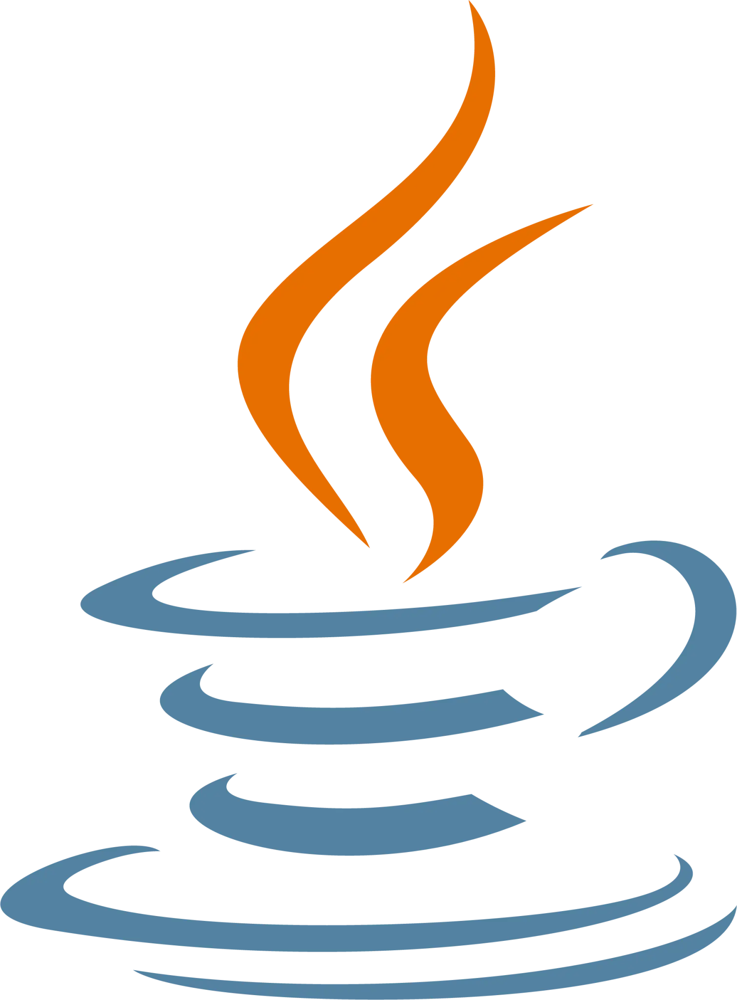
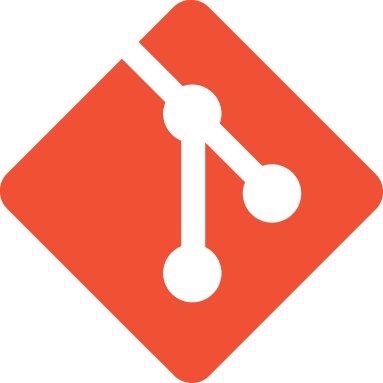
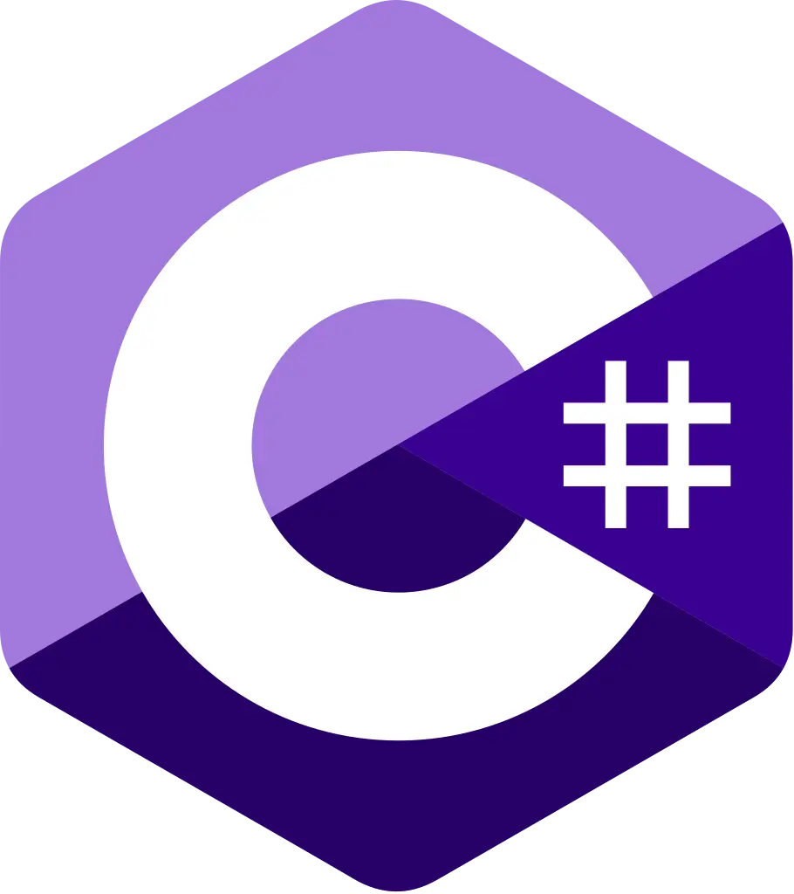
Skills
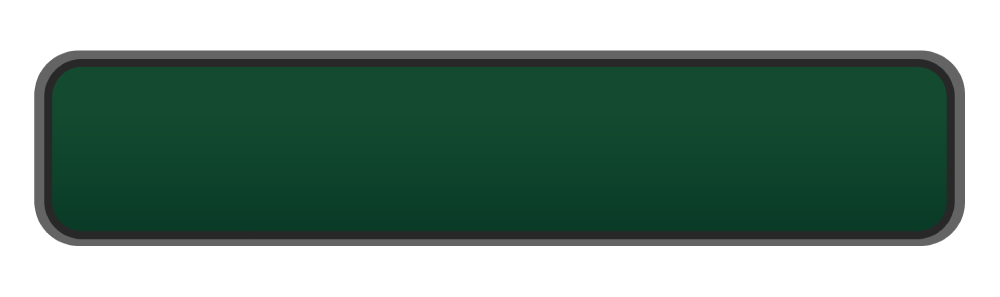
JAVASCRIPTProjeto Amparo Ao RS
Esta plataforma web foi desenvolvida para auxiliar a população do Rio Grande do Sul durante as inundações que assolaram o estado, além de oferecer um canal de informações para aqueles que querem ajudar.
HTML, CSS, NodeJS
VEL
Uma plataforma dedicada à melhoria da gestão de empresas de entregas rápidas, ajudando entregadores e restaurantes a controlar melhor seus negócios. Nosso objetivo é oferecer uma estrada mais suave e direções claras para o sucesso!
React, AWS, JAVA, Springboot, MySQL e Docker.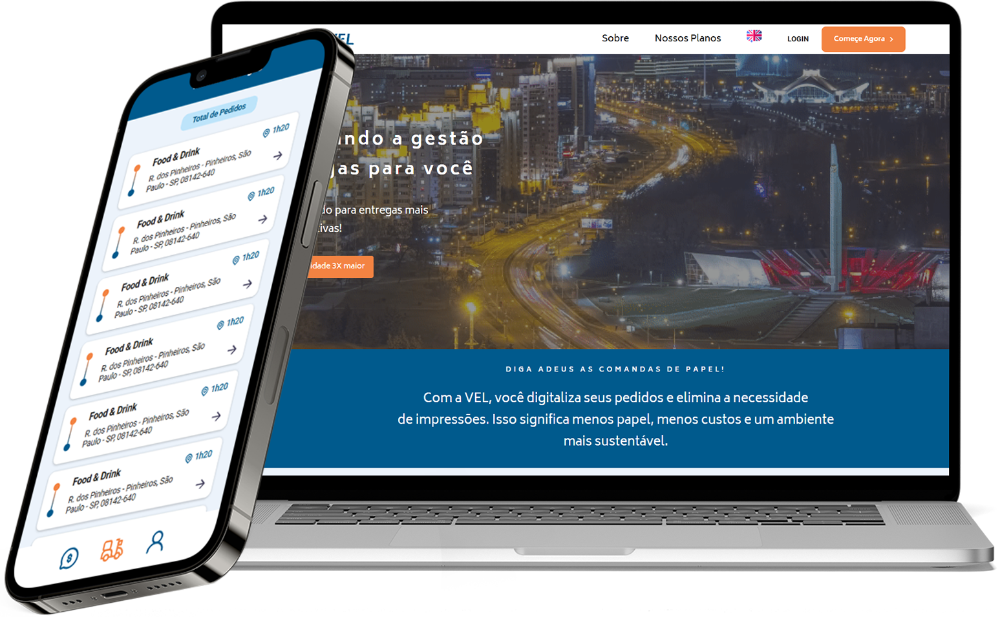
Cemiterios e Crematorios Zona Sul
Landing Page de um site sobre jazigos e crematórios. Ficou em primeiro lugar de pesquisas de cemitérios ou crematórios da zona sul.
HTML, CSS, Javascript e SEO.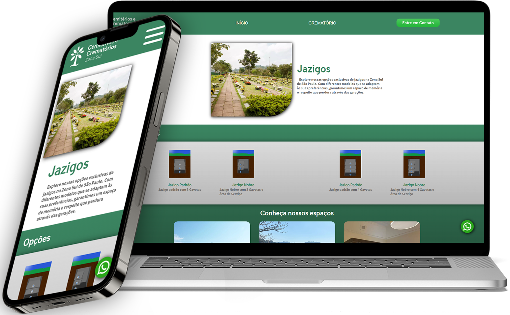
CuboBank
Projeto de ajustes e melhorias de um caixa eletrônico com muitas funcionalidades e armazenamento de dados em cache.
HTML, CSS e Javascript.
FreedonLents
Landing page com um design voltado a chamar a atenção do usuário para uma compra, visando responsividade em multiplas telas e plataformas.
HTML, CSS e Javascript.
Projeto Dark Souls 3
O site mostra todos os Bosses do game e mostra uma breve introdução e algumas de suas características.
HTML, CSS e Javascript.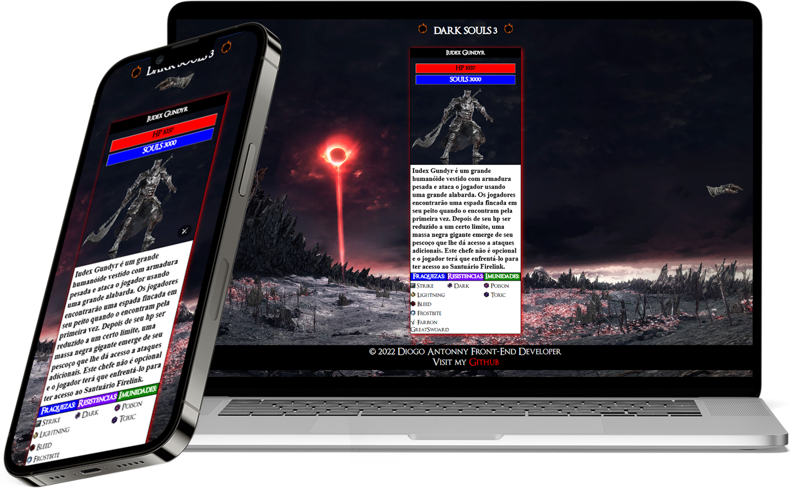
Old School Comics
Sites de notícias com um design voltado a cartoons old school prento e branco, visando responsividade em multiplas telas e plataformas.
HTML, CSS e Javascript.
Vida Acadêmica
ANÁLISE E DESENVOLVIMENTO DE SISTEMAS
Faculdade Impacta
08/2024 à 12/2026
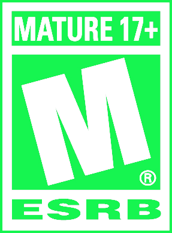
DESENVOLVEDOR FULL-STACK JAVA
Senac São Paulo - Instituto Proa
08/2024 à 12/2026
TÉCNICO EM ELETRÔNICA
Etec Aprígio Gonzaga
01/2020 à 12/2022
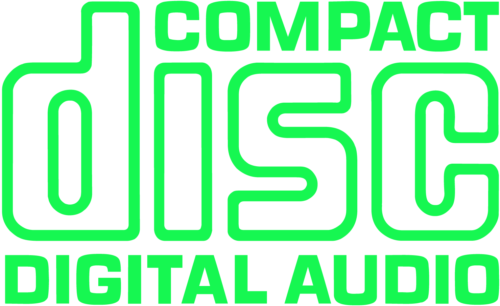

Premiação
Aluno Destaque
PROA 2024
Experiências Profissionais
Estágiario de desenvolvimento de software - RB Investimentos
Atuei na área de desenvolvimento da empresa, trabalhando com queries SQL, agendamento de dados, análise de grandes volumes de informação e geração de relatórios a partir de requisições SQL. Além disso, participei do desenvolvimento de software e aplicações web, utilizando a arquitetura MVC e tecnologias da Microsoft, como .NET e C#. Também contribuí para a implementação de inteligência artificial nos processos da empresa, focando em automação e inovação.
Desenvolvedor Full Stack e Scrum Master - VEL
Atuei como Scrum Master no Projeto Demoday do Instituto PROA, organizando tarefas, motivando a equipe e utilizando metodologias ágeis como Scrum e Matriz GUT. Gerenciei informações no Trello, conduzi dailys em inglês e promovi dinâmicas para fortalecer o grupo. Além da gestão, desenvolvi o front-end em React, auxiliei na criação de APIs em Java com Spring Boot e no banco de dados MySQL.
Desenvolvedor Freelancer
Ao longo da minha trajetória, trabalhei diretamente com clientes, desenvolvendo landing pages e páginas web que não apenas impressionam visualmente, mas também entregam resultados. Criei sites 100% responsivos, rápidos e otimizados para SEO, garantindo uma experiência de usuário excepcional e alta conversão de visitantes em clientes.
Aprendiz TI - Concentrix
Fui responsável pela gestão de VLANs via DHCP, verificação de pontos de rede e organização da infraestrutura de TI. Atuei no gerenciamento de computadores e usuários, manutenção de hardware e software, além da automação de tarefas. Participei de reuniões bilíngues e lidei com tickets, formatação e instalação de sistemas.
Curiosidades
Games
Sou apaixonado por jogos desafiadores e sou um gamedev. Pretendo um dia publicar meus próprios jogos.
Línguas
Adoro estudar e falar outras línguas estrangeiras como inglês e mandarin. Tenho o sonho de explorar o mundo.

Música
Música faz parte da minha vida, gosto de ouvir e tocar. É algo que me inspira e me estimula.
Esportes
Adoro práticar esportes como skateboarding, calistenia e nadar. É algo indispensável na minha vida.